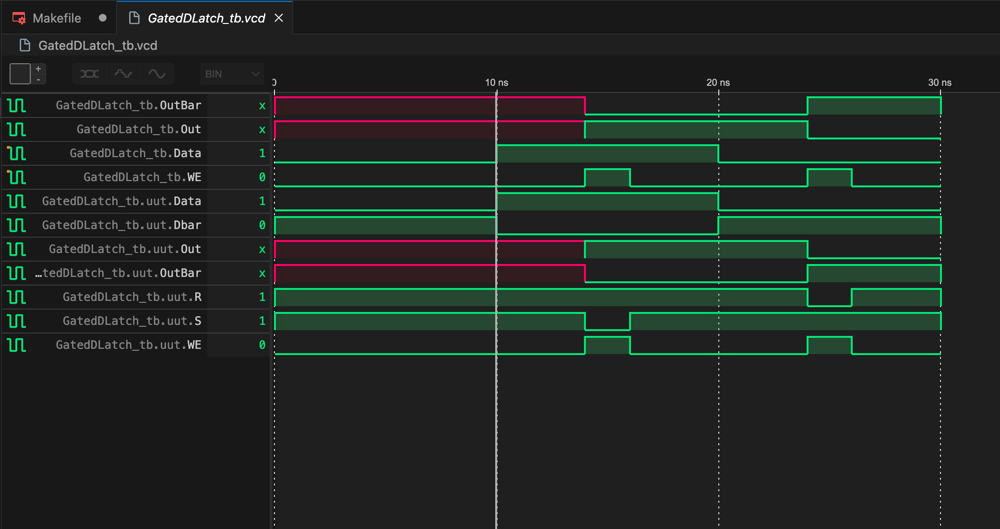
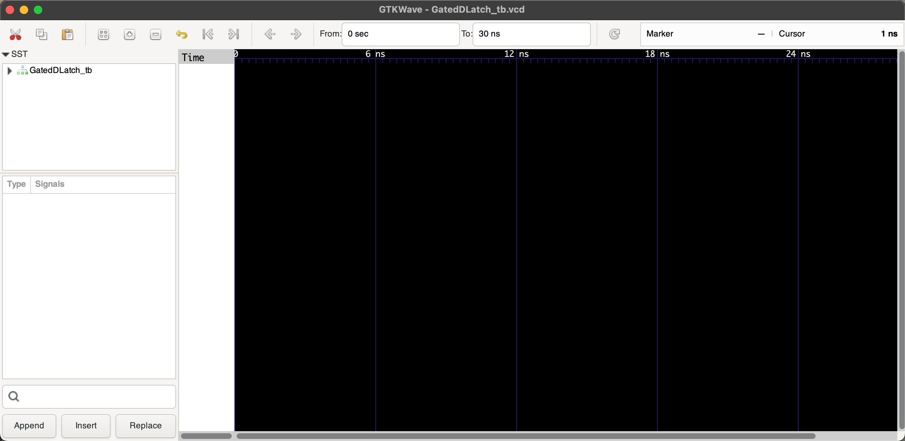
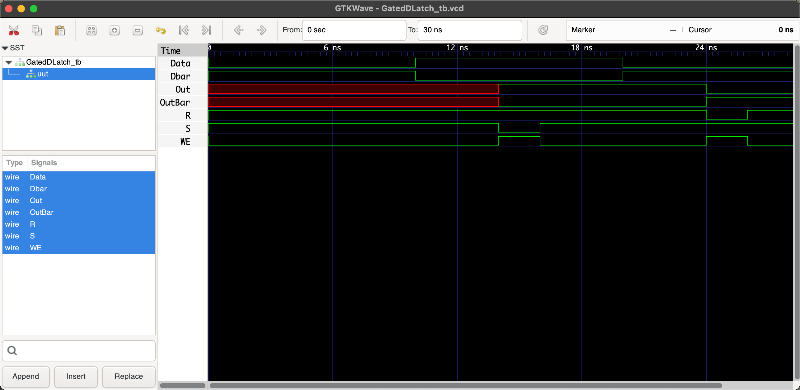
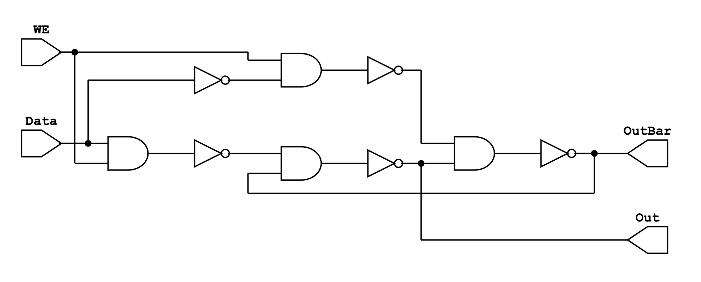
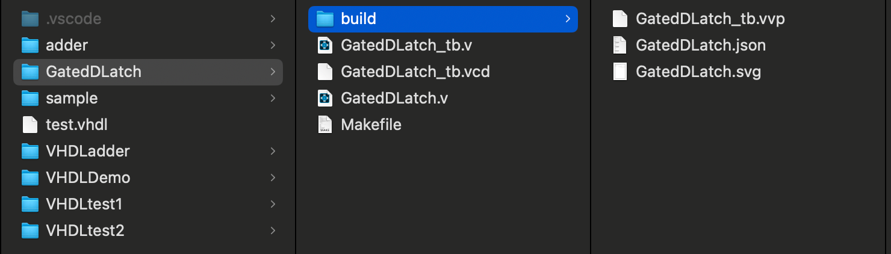
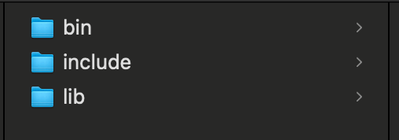
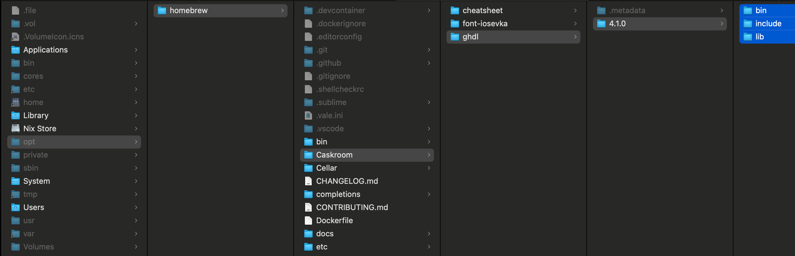
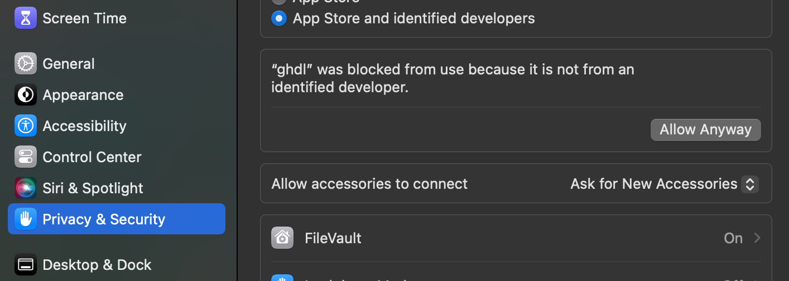

RTL Analysis on MacOS under 300MB
1 Intro and Overview
1.1 References
CLAIM: This article synthesizes conclusions and methods from multiple websites and is not pure original. 本文综合了多个网站的结论和方法，并非原创。
You may find these websites useful:
2 First Project in Verilog
2.1 Install Icarus Verilog Compiler
brew install icarus-verilog2.2 Compilation and Simulation
Create new folder called Verilog, then create two test files named GatedDLatch.v and GatedDLatch_tb.v. The former is the description file of the circuit, the latter is for testbench. And write the following contents respectively:
// in GatedDLatch.v
module GatedDLatch (Data, WE, Out, OutBar);
input Data;
input WE;
output Out;
output OutBar;
// component name(output, input1, input2)
wire S;
wire R;
wire Dbar;
nand g1(S, Data, WE);
not g2(Dbar, Data);
nand g3(R, WE, Dbar);
nand g4(Out, S, OutBar);
nand g5(OutBar, R, Out);
endmoduleand
// in GatedDLatch_tb.v
`timescale 1ns / 1ns // simulation time, time precision = 1ns
//Import the main code into the testbench
`include "GatedDLatch.v"
module GatedDLatch_tb;
//Inputs as registers
reg Data;
reg WE;
//Outputs as wires
wire Out;
wire OutBar;
//Initialisation
GatedDLatch uut(Data, WE, Out, OutBar);
initial begin
//Name of the graph file that gets generated after we run
$dumpfile("GatedDLatch_tb.vcd");
$dumpvars(0,GatedDLatch_tb);
Data = 0;
WE = 0;
#10;
Data = 1;
#4;
WE = 1;
#2;
WE = 0;
#4;
Data = 0;
#4;
WE = 1;
#2;
WE = 0;
#4;
$display("Test complete");
end
endmoduleRun this in the terminal:
iverilog -o GatedDLatch_tb.vvp GatedDLatch_tb.vUse vvp command to convert the binary temperary file GatedDLatch_tb.vvp to GatedDLatch_tb.vcd waveform file:
vvp GatedDLatch_tb.vvpInstall Wavetrace in vscode to view the waveform:

You can also install gtkwave to view the waveform.
brew install gtkwave
gtkwave GatedDLatch_tb.vcd
Expand GatedDLatch_tb list to display the waveform:

2.3 Synthesis and Visualization
We can also visualize the circuit topology (called generating schematics). First, use YoSYS to convert the verilog code into gate-level netlist. Of course you should install the command line tool YoSYS:
brew install yosys
yosys -V # Verify Yosys installationYoSYS will first convert the circuit structure description file GatedDLatch.v into a json file:
yosys -p "prep -top GatedDLatch; write_json GatedDLatch.json" GatedDLatch.vThen we install another tool called netlistsvg:
# Install Node.js (if not already installed)
brew install node
# Install netlistsvg globally using npm
npm install -g netlistsvg
# Verify netlistsvg installation
netlistsvg --versionUsing the netlistsvg tool to convert GatedDLatch.json to GatedDLatch.svg:
netlistsvg GatedDLatch.json -o GatedDLatch.svgPreviewing GatedDLatch.svg will give you the circuit schematic:

GatedDLatch.svg2.4 Makefile Work Flow
The entire workflow can be divided into two major independent parts:
- Compilation and Simulation:
iverilog(Compilation)vvp(Simulation)
- Synthesis and Circuit Structure Visualization:
yosys(Synthesis)netlistsvg(Visualization)
We use a Makefile to automate this process (ensure that Make and related components are installed): Create a Makefile file in the previously created Verilog folder and add the following content:
# Description: Makefile for GatedDLatch
CIRCUIT_STRUCT = GatedDLatch
# Directories
BUILD_DIR = build
# Ensure the build directory exists
$(BUILD_DIR):
mkdir -p $(BUILD_DIR)
# Compilation: iverilog compilation
iverilog: $(CIRCUIT_STRUCT).v $(CIRCUIT_STRUCT)_tb.v | $(BUILD_DIR)
iverilog -o $(BUILD_DIR)/$(CIRCUIT_STRUCT)_tb.vvp $(CIRCUIT_STRUCT)_tb.v
# Simulation: generate waveform (.vcd)
vvp: $(BUILD_DIR)/$(CIRCUIT_STRUCT)_tb.vvp
vvp $(BUILD_DIR)/$(CIRCUIT_STRUCT)_tb.vvp
# Synthesis: generate circuit structure configuration file (.json)
YOSYS: $(CIRCUIT_STRUCT).v | $(BUILD_DIR)
yosys -p "prep -top $(CIRCUIT_STRUCT); write_json $(BUILD_DIR)/$(CIRCUIT_STRUCT).json" $(CIRCUIT_STRUCT).v
# Visualization: generate human readable (.svg) from .json
NETLISTSVG: $(BUILD_DIR)/$(CIRCUIT_STRUCT).json | $(BUILD_DIR)
netlistsvg $(BUILD_DIR)/$(CIRCUIT_STRUCT).json -o $(BUILD_DIR)/$(CIRCUIT_STRUCT).svg
# Schematic diagram only: Synthesis then Visualization
schematic: YOSYS NETLISTSVG
# Run all steps
run_all: iverilog vvp schematic
# Clean build directory
clean:
rm -rf $(BUILD_DIR)
rm -f $(CIRCUIT_STRUCT)_tb.vcdAfter modifying the files, simply execute:
make clean
make run_allThis will generate all the relevant files:

3 First Project in VHDL
3.1 Install GHDL Compiler
Similar to Verilog, VHDL is also a hardware description language. Compiling it requires another tool: GHDL. Installing it on macOS can be tricky. The following steps have been tested on an M2 Mac (as of 2024-09-01):
Install vhdl using brew:
brew install vhdlvhdl has two versions: LLVM and mcode. The LLVM version has some issues on macOS, and the brew-installed version uses LLVM, so we manually download the mcode version from here. I downloaded ghdl-macos-11-mcode.tgz.
Extract it by double-clicking, and you will get three files:

Copy and paste these three files to the following path: /opt/homebrew/Caskroom/ghdl/4.1.0:

In the terminal, type:
ghdl --versionIf you encounter security prompts, go to System Settings > Privacy & Security to allow access:

3.2 Compilation, Linking and Simulation
Unlike Verilog, VHDL requires an additional Linking step, which connects the component declarations with their implementation files (testbench). Why doesn’t Verilog require this? Because the testbench file in Verilog includes the declaration contents (include "GatedDLatch.v"), so it links automatically.
In Verilog, we used two separate tools (iverilog and vvp) for compilation and simulation. However, for VHDL, we only need one tool: GHDL.
Create a new folder VHDLDemo, and within it, create two files: demo.vhdl and demo_tb.vhdl. The former describes the circuit structure, and the latter serves as the testbench file (you can also use .vhd as the suffix). Add the following content to the respective files:
library IEEE;
use IEEE.STD_LOGIC_1164.ALL;
entity demo is
port (
A : in STD_LOGIC;
B : in STD_LOGIC;
O : out STD_LOGIC
);
end demo;
architecture Behavioral of demo is
begin
O <= not (A and B); -- NAND gate
end Behavioral;and
library IEEE;
use IEEE.STD_LOGIC_1164.ALL;
entity demo_tb is
end demo_tb;
architecture Behavioral of demo_tb is
signal A : STD_LOGIC := '0';
signal B : STD_LOGIC := '0';
signal O : STD_LOGIC;
-- Instantiate the unit under test (UUT)
component demo
port (
A : in STD_LOGIC;
B : in STD_LOGIC;
O : out STD_LOGIC
);
end component;
begin
UUT: demo port map (
A => A,
B => B,
O => O
);
-- Test process
process
begin
-- Test case 1: A = 0, B = 0
A <= '0';
B <= '0';
wait for 10 ns;
-- Test case 2: A = 0, B = 1
A <= '0';
B <= '1';
wait for 10 ns;
-- Test case 3: A = 1, B = 0
A <= '1';
B <= '0';
wait for 10 ns;
-- Test case 4: A = 1, B = 1
A <= '1';
B <= '1';
wait for 10 ns;
-- End of simulation
wait;
end process;
end Behavioral;Create a Makefile to automate the process:
# Description: Makefile for VHDLDemo
CIRCUIT = demo
TB = demo_tb
BUILD_DIR = build
# Ensure the build directory exists
$(BUILD_DIR):
mkdir -p $(BUILD_DIR)
# Compilation: compile the design and testbench
ghdl_compile: $(BUILD_DIR)
ghdl -a --workdir=$(BUILD_DIR) $(CIRCUIT).vhdl
ghdl -a --workdir=$(BUILD_DIR) $(TB).vhdl
# Linking: Elaborate the design and testbench
ghdl_elab: ghdl_compile
ghdl -e --workdir=$(BUILD_DIR) $(TB)
# Simulation: simulate the testbench
ghdl_simulate: ghdl_elab
ghdl -r --workdir=$(BUILD_DIR) $(TB) --vcd=$(BUILD_DIR)/$(TB).vcd
### These cannot work for now##############################################
# # Synthesis: generate circuit structure configuration file (.json), you should have ghdl plugin installed for yosys, but I have error: "ERROR: No such command: ghdl" or "dyld[5264]: missing symbol called", possible solution could be to install yosys from source, but not sure
# YOSYS: $(CIRCUIT).vhdl | $(BUILD_DIR)
# yosys -p "ghdl $(CIRCUIT); prep -top $(CIRCUIT); write_json -compat-int $(BUILD_DIR)/$(CIRCUIT).json" $(CIRCUIT).vhdl
# # Visualization: generate human readable (.svg) from .json
# NETLISTSVG: $(BUILD_DIR)/$(CIRCUIT).json | $(BUILD_DIR)
# netlistsvg $(BUILD_DIR)/$(CIRCUIT).json -o $(BUILD_DIR)/$(CIRCUIT).svg
# # Schematic diagram only: Synthesis then Visualization
# schematic: YOSYS NETLISTSVG
# # Run all steps
# run_all: ghdl_compile ghdl_elab ghdl_simulate YOSYS NETLISTSVG
### These cannot work for now##############################################
# Run compilation, linking and simulation
run_cls: ghdl_compile ghdl_elab ghdl_simulate
# Clean build directory
clean:
rm -rf $(BUILD_DIR)
rm -f $(TB)
# Experiment: Run testbench without the design file
run_tb_only: $(BUILD_DIR)
ghdl -a --workdir=$(BUILD_DIR) $(TB).vhdl
ghdl -r --workdir=$(BUILD_DIR) $(TB) --vcd=$(BUILD_DIR)/$(TB)_no_design.vcdThe running process is very clear. In the command line, execute:
make clean
make run_clsThis will complete the process.
If you want to see what happens if you skip compiling and linking the design file (demo.vhdl), run:
make clean # Cannot omitted!
make run_tb_onlyYou can compare the two .vcd files generated in VSCode or using GTKWave; they are different as expected.
3.3 No Synthesis and Visualization Plan
Note that this Makefile does not include steps to generate a schematic diagram because yosys requires a ghdl plugin. Currently, the integration is not very stable. You can refer to ghdl-yosys-plugin and building-ghdl for more details. However, the suggested methods have been tested on M2 Mac and result in errors:
/----------------------------------------------------------------------------\
| yosys -- Yosys Open SYnthesis Suite |
| Copyright (C) 2012 - 2024 Claire Xenia Wolf <claire@yosyshq.com> |
| Distributed under an ISC-like license, type "license" to see terms |
\----------------------------------------------------------------------------/
Yosys 0.44 (git sha1 80ba43d26, clang++ 15.0.0 -fPIC -O3)
-- Running command `ghdl demo_tb.vhdl -e demo_tb; prep -top demo_tb; write_json demo.json' --
1. Executing GHDL.
dyld[5264]: missing symbol called
zsh: abort yosys -m ghdl -pThis issue has also been mentioned in the Issues section of ghdl-yosys-plugin, but there is no solution yet.
Possible solutions might include compiling and installing yosys from source, ensuring the correct versions of yosys and ghdl, or checking if any component of the FPGA Toolchain is missing. Alternatively, you could try converting VHDL to Verilog using some tool (like GPT) and then synthesizing the schematics.